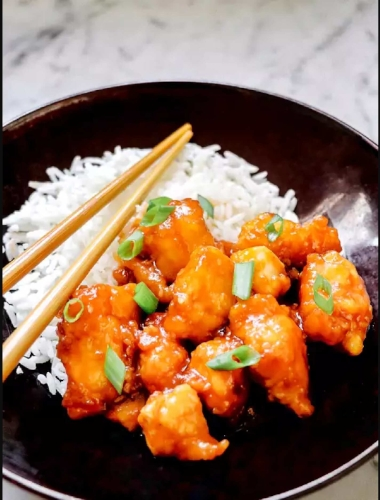

General Tso's Instant Pot Chicken

Description
General Tso's chicken is one of the most popular dishes at any chinese takeout establishment. With a complex blend of flavors that include both sweet and spice, this dish can turn heads. But like many dishes that come from the kitchens of our favorite restaurants making it often takes a lot of time, practice, and activity from the cook to make sure it comes out right. Thankfully, there exists an eaiser way! Utilizing an instant pot you can take mere minutes to prep the food and let the machinery do the tedious part for you!
Using devices like the instant pot to create entire meals is no new feat, and with a little prep it makes cooking a breeze! Just make sure you have everything you need off the list below, and follow the directions to get yourself a mouthful of delight!
Ingredients
- 2 tablespoons reduced-sodium soy sauce
- 2 tablespoons rice vinegar
- 1 tablespoon honey
- 1 tablespoon dark brown sugar
- 1 tablespoon tomato paste
- 2 teaspoons sesame oil
- 1 teaspoon red pepper flakes
- 16oz package of chicken breast tenderloins, cut into cubes
- 1 egg, beaten
- 1/2 cup cornstarch
- 1 tablespoon olive oil
- 1 tablespoon sesame seeds
- 1 clove garlic, minced
- 1/2 teaspoon ginger paste
- 1/4 cup chicken broth
Steps
- Whisk soy sauce, rice vinegar, honey, brown sugar, tomato paste, sesame oil, and red pepper flake in a bowl for sauce. Set to the side.
- Place egg in shallow bowl, cornstarch in a second shallow bowl. Dip chicken in egg, coat in cornstarch, then place on a plate.
- Turn on Instant Pot and select Saute function. Add olive oil and heat for 1 minute. Add chicken in a single layer cook until crisp, roughly 2 minutes per side. Put chicken on a new plate.
- Stir sesame seeds, garlic, and ginger paste into the pot. Whisk in chicken broth and the reserved sauce until combined, cook for 2 minutes. Press cancel button. Add chicken to the pot and stir to coat.
- Close and lock the lid. Select high pressure and set timer for 5 minutes. Allow 10 minutes for pressure to build.
- Release pressure using the quick release method, about 5 minutes. Stir the chicken.
- Select the Saute function again and cook until sauce has thickened, roughly 3 minutes.